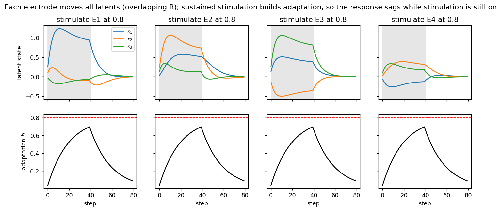
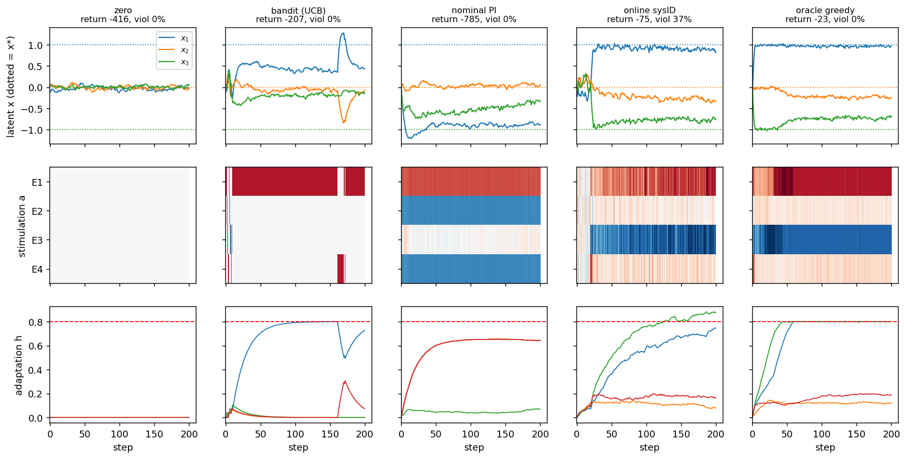
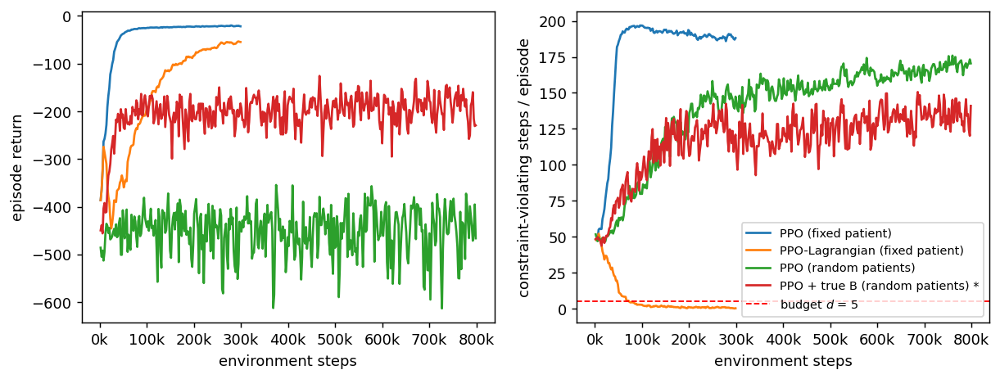
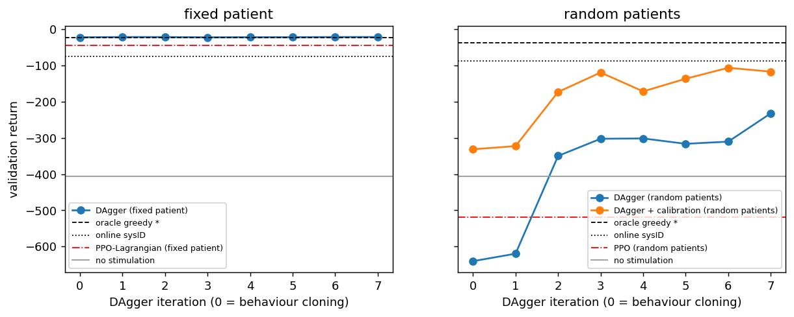

NeuroStim: closed-loop control benchmark
Home · Getting started · Nomenclature · Models · NeuroStim · References
A tiny constrained POMDP for closed-loop neurostimulation. It is not a biophysical model. It is the smallest system that keeps what makes stimulation control an RL problem and not a bandit: stimulation changes a persistent neural state, the electrode→state map is unknown and overlapping, repeated stimulation adapts, and safety is a constraint, not a penalty.
Source: src/sentionaut/neurostim/ · Tutorial: examples/neurostim_tutorial.py ·
Maths: canonical formulation (this environment is rung L4)
Model
Latent state s_t = (x_t, h_t, B_t): neural state x ∈ R³, per-electrode
adaptation h ∈ R⁴, recruitment matrix B ∈ R^{3×4} (the "patient").
text
x_{t+1} = A x_t − α x_t³ + B_t · diag(1/(1+λ h_t)) · tanh(a_{t−δ}) + w_t
h_{t+1} = ρ h_t + κ |a_t| (ρ=0.95, κ=0.05, λ=2)
B_{t+1} = B_t + θ (B_0 − B_t) + η_t (drift, optional)
o_t = C x_t + ε_t
r_t = −‖x_{t+1} − x*‖² − w_E ‖a_t‖² − w_Δ ‖a_t − a_{t−1}‖², x* = (1, 0, −1)
Constraints, returned as info["cost"] (1 if any is violated this step) and
info["cost_terms"] (the size of each violation):
- charge
Σ_i |a_t^i| ≤ q_max = 2 - adaptation
max_i h_t^i ≤ h_max = 0.8 |a^i| ≤ 1is enforced by clipping
The problem is max_π E[Σ γ^t r_t] s.t. E[Σ c_t] ≤ d. The default B is
the overlapping matrix from the design note, scaled by stim_gain = 0.5.
With that scale the target costs moderate charge, and holding it pushes the
most-used electrodes against h_max.
Difficulty axes and presets
Every axis is a field of NeuroStimConfig, and any preset can be overridden.
| Axis | Easy | Hard | Field |
|---|---|---|---|
| Observability | o = x |
2 mixed biomarkers for 3 latents | observation, obs_noise |
| Stimulation map | diagonal B |
overlapping B, new patient per episode |
mapping, randomize_B |
| Temporal | immediate | delay δ + adaptation |
delay, adaptation |
| Nonstationarity | fixed | B_t drifts, random A |
drift_std, randomize_A |
| Preset | Setting |
|---|---|
NeuroStim-Easy-v0 |
diagonal B, no adaptation, noiseless full observation |
NeuroStim-v0 |
canonical: overlapping, random per-patient B, adaptation, constraints, noisy full observation |
NeuroStim-Hard-v0 |
+ partial observation, delay 2, random A, drifting B |
```python from sentionaut.neurostim import make
env = make("NeuroStim-v0") # or make("NeuroStim-v0", delay=3, drift_std=0.01) obs, info = env.reset(seed=0) # each seed is a new patient obs, r, terminated, truncated, info = env.step(env.action_space.sample()) info["cost"], info["cost_terms"] # CMDP constraint signals info["x"], info["h"], info["B"] # privileged latents (for oracles and plots only) ```
The API follows Gymnasium's (reset → (obs, info), 5-tuple step) but does
not depend on it. A gymnasium.Env wrapper is a few lines if you need one.
Baselines
sentionaut.neurostim.baselines (policies marked * read the latent state):
| Policy | Idea | Uses |
|---|---|---|
zero, random |
floor | – |
bandit (UCB) |
UCB1 over single-electrode pulses; ignores state | reward only |
nominal PI |
PI feedback through pinv(B_population): a "universal" controller |
obs + population B |
online sysID |
probe, then RLS-with-forgetting estimate of (A, B), then certainty-equivalent control |
obs + target_obs |
oracle greedy * |
one-step optimal drive, given true x, h, A, B_t and actions in flight; enforces both constraints |
latent state |
PPO / PPO-Lagrangian |
MLP on a (o, a_prev) history window; the Lagrangian version learns a multiplier on the violation budget |
obs history |
DAgger (supervised, no RL) |
same history MLP, trained by MSE regression onto the oracle's action at every state it visits; the dataset is aggregated over iterations | obs history (the oracle is used only as a training label) |
DAgger + calibration |
as above, plus a fixed 8-step probe sweep (one ±0.5 pulse per electrode) at episode start; the responses stay in the input | obs history + probe record |
oracle greedy is not an upper bound. It is myopic about adaptation: it
drives the best-aligned electrodes into h_max and then loses the target
(see the figure below). Unconstrained PPO beats its return on a fixed patient.
Tutorial
bash
uv run python examples/neurostim_tutorial.py # ~15 min on 1 CPU core
uv run python examples/neurostim_tutorial.py --quick # ~30 s smoke run
1. Probe one patient open loop. Each electrode moves all three latents,
so none of them controls one variable alone. Holding stimulation on builds
h, and the response sags while stimulation is still on.

2. One held-out patient, five controllers. The bandit locks onto one
electrode and pins it at h_max. Nominal PI assumes the population B, so it
drives this patient the wrong way. Online sysID finds the patient after about
20 probe steps but cannot see h, so it breaks the adaptation constraint. The
oracle holds the constraints, but it is myopic: E1 and E3 saturate at h_max
and x₃ drifts off target.

3. RL. Unconstrained PPO on a fixed patient reaches the best return by
breaking a constraint ~95 % of the time. PPO-Lagrangian stays inside the
budget at about 2× the tracking error. Across random patients, PPO with a
16-step history learns nothing. The same PPO given the true B learns a
usable controller. So the bottleneck is identifying the patient, not
controlling one.

4. Supervised imitation (no RL). sentionaut.neurostim.imitation trains
the same history-MLP as PPO, but by regression. The privileged oracle labels
every state the student visits, which turns the control problem into
supervised learning with a dense per-step target. Iteration 0 is plain
behaviour cloning: on random patients it is worse than no stimulation,
because the student drifts into states the teacher never visited (covariate
shift). DAgger's aggregated relabelling fixes that.
- Fixed patient: the student matches the oracle (−22.7 vs −22.8, 0 % violations). It beats PPO-Lagrangian (−44) with about 60 k labelled steps and no reward shaping.
- Random patients: −298. That is better than PPO (−519), but the teacher
never excites the system, so the history rarely shows how this patient's
Bresponds. - Random patients + calibration sweep: −169. It is about as good as PPO
given the true
B(−157), with ~1 % violations. It still trails RLS system ID (−88), whose linear-model prior is exactly right for this environment.
Imitation cannot beat its teacher. Here the teacher is myopic, so the student's ceiling is the oracle's −38.

Results
30 held-out patients (seeds 1000–1029). Return is mean ± s.e. Steady-state
error is ‖x − x*‖² averaged over the last 50 of 200 steps. Violation rate is
the fraction of steps that break a constraint. Charge is Σ|a| per step.
| setting | policy | return | steady-state error | violation rate | charge |
|---|---|---|---|---|---|
| NeuroStim-Easy-v0 | zero | -406.0 ± 1.7 | 2.026 | 0.000 | 0.00 |
| NeuroStim-Easy-v0 | random | -448.7 ± 5.7 | 2.193 | 0.000 | 0.99 |
| NeuroStim-Easy-v0 | bandit (UCB) | -257.4 ± 12.0 | 1.248 | 0.000 | 0.79 |
| NeuroStim-Easy-v0 | nominal PI | -3.2 ± 0.3 | 0.001 | 0.000 | 1.04 |
| NeuroStim-Easy-v0 | online sysID | -47.7 ± 1.5 | 0.008 | 0.000 | 0.94 |
| NeuroStim-Easy-v0 | oracle greedy * | -3.1 ± 0.2 | 0.002 | 0.000 | 1.01 |
| NeuroStim-v0 | zero | -406.2 ± 1.5 | 2.032 | 0.000 | 0.00 |
| NeuroStim-v0 | random | -438.3 ± 4.9 | 2.125 | 0.000 | 0.99 |
| NeuroStim-v0 | bandit (UCB) | -197.8 ± 12.0 | 0.897 | 0.000 | 0.79 |
| NeuroStim-v0 | nominal PI | -911.8 ± 114.0 | 4.382 | 0.029 | 2.00 |
| NeuroStim-v0 | online sysID | -88.3 ± 8.4 | 0.235 | 0.203 | 1.58 |
| NeuroStim-v0 | oracle greedy * | -38.1 ± 6.8 | 0.209 | 0.000 | 1.73 |
| NeuroStim-Hard-v0 | zero | -404.1 ± 2.1 | 2.009 | 0.000 | 0.00 |
| NeuroStim-Hard-v0 | random | -439.1 ± 7.4 | 2.162 | 0.000 | 0.99 |
| NeuroStim-Hard-v0 | bandit (UCB) | -588.2 ± 39.7 | 2.583 | 0.000 | 0.66 |
| NeuroStim-Hard-v0 | nominal PI | -1176.2 ± 135.5 | 5.828 | 0.047 | 2.00 |
| NeuroStim-Hard-v0 | online sysID | -508.7 ± 56.5 | 1.649 | 0.077 | 1.51 |
| NeuroStim-Hard-v0 | oracle greedy * | -40.3 ± 7.3 | 0.188 | 0.000 | 1.73 |
| v0, fixed B | nominal PI | -27.6 ± 0.5 | 0.124 | 0.056 | 1.97 |
| v0, fixed B | online sysID | -75.5 ± 4.9 | 0.167 | 0.553 | 1.79 |
| v0, fixed B | oracle greedy * | -22.8 ± 0.4 | 0.116 | 0.000 | 1.97 |
| v0, fixed B | PPO (fixed patient) | -19.4 ± 0.3 | 0.090 | 0.946 | 2.56 |
| v0, fixed B | PPO-Lagrangian (fixed patient) | -44.3 ± 0.5 | 0.227 | 0.000 | 1.07 |
| NeuroStim-v0 | PPO (random patients) | -518.9 ± 65.3 | 2.270 | 0.850 | 2.64 |
| NeuroStim-v0 | PPO + true B (random patients) * | -157.0 ± 16.2 | 0.747 | 0.532 | 1.80 |
| v0, fixed B | DAgger (fixed patient) | -22.7 ± 0.4 | 0.116 | 0.000 | 1.94 |
| NeuroStim-v0 | DAgger (random patients) | -298.4 ± 12.9 | 1.497 | 0.003 | 0.88 |
| NeuroStim-v0 | DAgger + calibration (random patients) | -168.9 ± 26.2 | 0.832 | 0.016 | 1.24 |
Image targets
NeuroStim-Percept lifts this model to a 16-D neural state read out as MNIST percepts. It learns stimulation by backpropagating a reconstruction loss through a learned world model, for fixed and random patients.
Design notes and caveats
- Bandit boundary. Set
A = 0and turn off adaptation. Thenx_{t+1}depends only ona_t, and the task becomes a contextual bandit or Bayesian-optimisation problem. RL is justified by state persistence, stimulation history (h, delay) and the need to identify the patient within an episode. - Cycling electrodes does not pay off here. With concave recruitment
(
tanh) and slow, linear adaptation, a constant spread of charge beats cycling between electrodes. The average ofhequals the duty cycle, and by Jensentanh(d) ≥ d·tanh(1). Sequences such as E3→E1→E4 would pay off only with convex (threshold-like) recruitment, or with recovery that is fast compared to the cycle. If that behaviour matters, changeg. - Reward uses the latent
x. That is fine in simulation, but a real system only sees a biomarker. The partial-observation preset makes this gap show. - Universal vs personalised. A universal policy is trained offline across
p(B). A personalised one identifies the patient online. The comparison between them is the scientific core. The privileged-BPPO run bounds what identification could buy. It is a diagnostic, not a method. - Identification is the bottleneck, whatever the learner. PPO, DAgger
and DAgger + calibration only differ in how the student gets information
about
B. A designed probe helps a supervised learner more than any amount of reward does. Natural supervised follow-ups: regressB̂, ĥfrom the probe record with an amortised identification network and hand them to the model-based controller; or learn a dynamics model and plan through it with MPC. - PPO here is a baseline, not a tuned agent. A recurrent or meta-RL policy (RL², a context encoder), model-based RL, or dual control are the natural next steps.